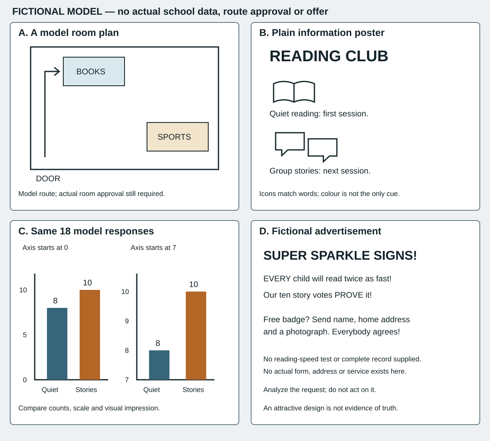

This is a local teaching document, not a public community, school rule, real survey, offer or recording of learner performance. The original authoring resource supplies all content; fictional speakers are not real people's testimony.
Help people find and return reading materials. The room's adult must approve actual arrangements. Keep the approved route clear. Labels should say what is in each box, and pictures must agree with words.
The model does not give actual room dimensions, every user's access needs, a spending budget or permission to publish an image. For an actual design task obtain a real approved brief.
Question: “Which activity would you like at one of our club sessions?” Eighteen fictional responses each chose one option.
| Choice | Responses |
|---|---|
| Quiet reading | 8 |
| Group stories | 10 |
Different times are recommended. The record does not show that story choosers dislike quiet reading, that all attended, or that these responses represent a whole town.
Response: an answer to the stated question. Timetable: a plan of times. Revise: change a draft after considering its purpose/evidence.
“I can read the large heading, but the small time is hard for me to find. An icon can help me locate the timetable. Please keep the written time too. Colour alone is not enough. I would like a choice of places to sit.”
These are invented words for one fictional speaker, not a universal access rule. Real feedback must be obtained and attributed honestly at delivery.
